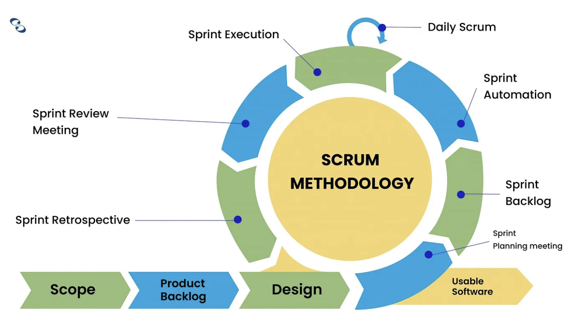
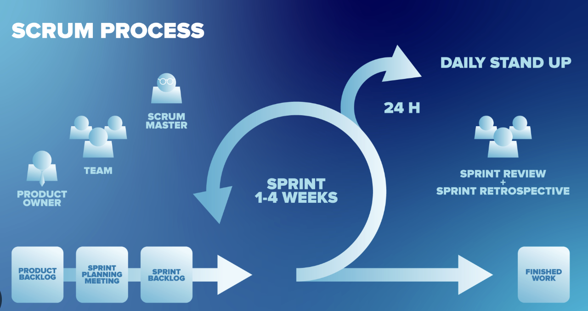
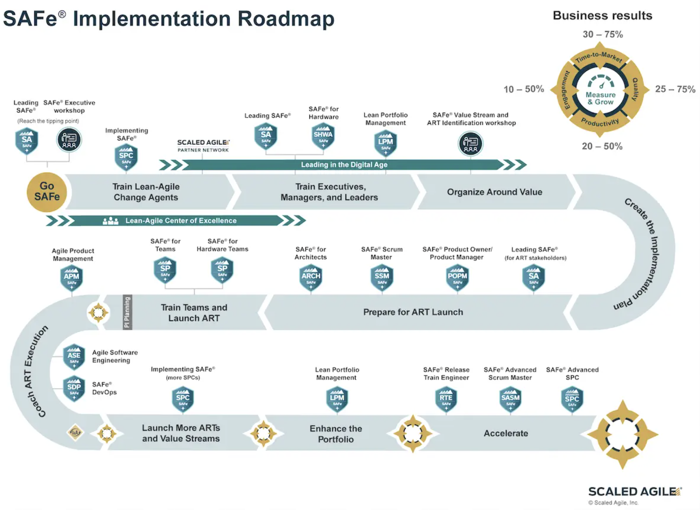

Professional Certifications

CSM Workflow

Alongside my technical coursework and game development experience, I’ve pursued professional certifications focused on Agile development, Scrum practices, and working effectively within large development teams.
The Certified ScrumMaster certification strengthened my understanding of Scrum roles, sprint planning, iterative development, team communication, and maintaining an effective development workflow.
These practices are especially relevant to collaborative game development, where programmers, designers, artists, producers, and other disciplines need to coordinate closely throughout production.

SAFe expands Agile and Scrum practices to larger organizations and development teams. The framework incorporates Lean, Agile, and DevOps principles to help coordinate work across multiple teams working toward shared production goals.
I pursued SAFe training to better understand how Agile development practices scale beyond individual teams, particularly in large game studios and technology organizations.

Most of the projects I work on are collaborative and interdisciplinary. Understanding Scrum and Agile development helps me contribute not only as a programmer, but also as a teammate who understands production, iteration, communication, and development priorities.
These certifications complement my technical experience by giving me a stronger understanding of how large teams organize and ship complex projects.